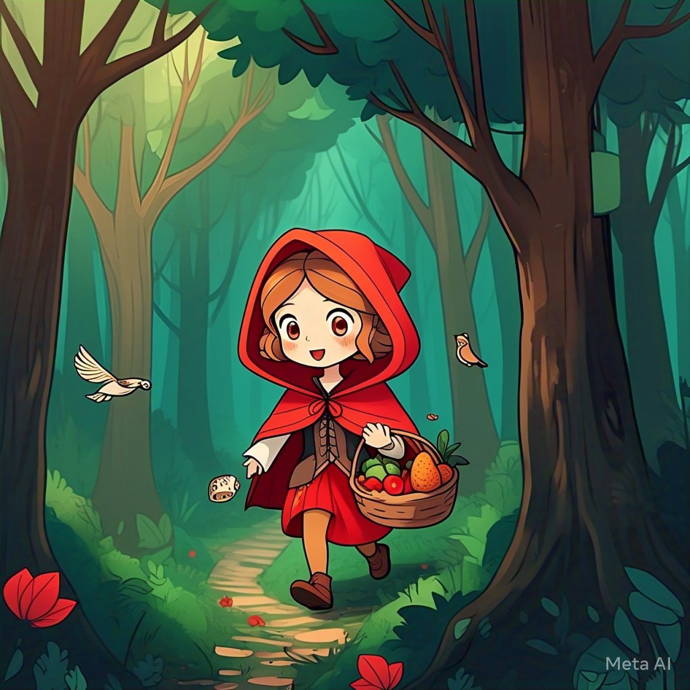
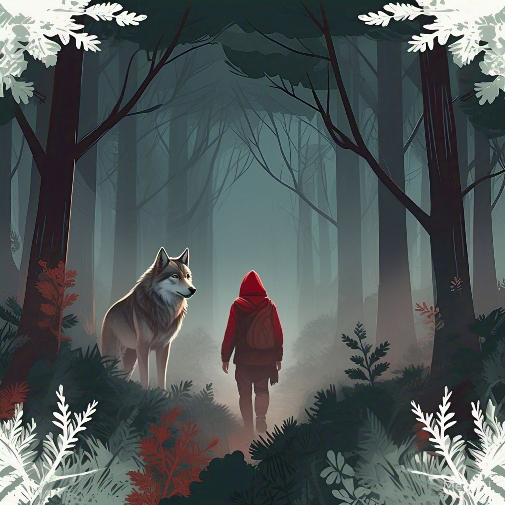
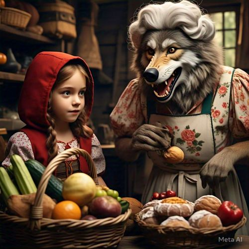

Chapeuzinho Vermelho
Era uma vez uma menina adorável conhecida como Chapeuzinho Vermelho, por causa do capuz vermelho que sempre usava. Um dia, sua mãe pediu que ela levasse uma cesta de guloseimas para sua avó, que morava do outro lado da floresta...
Enquanto caminhava pela floresta, Chapeuzinho Vermelho encontrou um lobo. O lobo perguntou aonde ela estava indo, e ela, ingenuamente, respondeu: "Estou indo visitar minha avó que está doente"...
O lobo, sendo esperto, correu à frente e chegou primeiro à casa da avó. Ele trancou a avó no armário e se disfarçou com suas roupas, deitando-se na cama, esperando por Chapeuzinho Vermelho...
